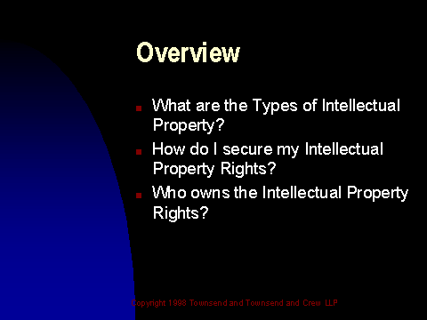

Slide 3 of 24
Notes:
As a brief road map of our discussion this morning, IÆve divided my presentation into three major parts.
1. First, we will answer the question of ôwhat is intellectual property?ö
2. Second, we will look at ôhow do I acquire intellectual property rights?ö
3. And Third, we will look at ôwho owns intellectual property rights?ö
So, this morningÆs presentation will address ôwhatö ôhowö and ôwhoö